| 朝鲜李朝诸王小记 上 | ||||
| 太祖至光海君 （1392――1622） 附先祖和四祖 参考李朝《�v源系�V》和部分韩国网站资料。 一，全州李氏先世谱系 李朝王室出于全州。全州府本为百济的完山，新罗真兴王置完山州，景德王改为全州，以备“九州”之数。新罗孝恭王时，甄萱建都于此，称后百济。高丽太祖十九年改为安南都护府，二十三年复为全州。高丽成宗十二年称承化节度安抚使，十四年置十二州节度使，号顺义军，隶属于江南道。高丽显宗将全州升为安南大都护府，后改全州牧。高丽恭愍王四年。因为高丽曾经囚元使�杆疾换ㄓ诖说兀�因此将全州牧降为部曲，次年复为完山府。李朝太祖元年以其为“御乡”，所以升为完山留守府。李朝太宗三年改为全州府。李朝在这里建有庆基殿和丰沛楼（“丰沛”是取刘邦故事）。 [始祖] 李翰 新罗司空 号甄城 妻庆州金氏 [二世] 李自延 新罗侍中 妻尹氏 [三世] 李天祥 新罗仆射 妻迎日郑氏 [四世] 李光禧 新罗阿于 妻�S氏 [五世] 李立全 新罗司徒 妻白氏 [六世] 李兢休 高丽司空 妻李氏 [七世] 李廉顺 高丽生员户长 妻郑氏 [八世] 李承朔 高丽生员户长 妻白氏 [九世] 李充庆 高丽生员 妻尹氏 [十世] 李景英 高丽生员户长 妻尹氏 [十一世] 李忠敏 高丽长史 妻崔氏 [十二世] 李华 高丽枢密 妻�S氏 [十三世] 李珍有 高丽生员户长 妻吴氏 [十四世] 李宫进 高丽翰林 妻李氏 [十五世] 李勇夫 高丽大将军 妻李氏 [十六世] 李�U 高丽�仁讨醋� 妻南平文氏 [十七世] 李阳茂 高丽将军 妻李氏 二、李朝追封四祖 1、穆祖 仁文圣穆大王 李安社 高丽宜州知事，后来曾经入仕元朝，为南京五千户所达鲁花赤。南宋咸淳十年（高丽元宗十五年，1274）三月十日去世。葬在咸兴的德陵。李朝太祖即位后追尊为穆祖（布德执义曰穆），后为穆祖。太宗时加上谥号“仁文圣穆”。 王妃 孝恭王后李氏，葬在咸兴安陵 子女 长子 安川大君 李於仙 次子 安原大君 李珍 三子 安丰大君 李精 四子 翼祖大王 李行里 五子 安昌大君 李梅拂 六子 安兴大君 李球寿 2、翼祖 康惠圣翼大王 李行里 生于咸兴的德源。袭封元朝千户职位，咸淳十年（高丽元宗十五年，1274）九月十日去世。葬在咸镜道安边，陵号智陵。太祖即位后上庙号为翼祖（思虑深远曰翼）。 王妃 贞淑王后崔氏，葬在咸镜道文川，陵号淑陵 子女 长子 咸宁大君 李安 二子 咸昌大君 李长 三子 咸原大君 李松 四子 度祖大王 李椿 五子 咸川大君 李源 六子 咸陵大君 李古泰 七子 咸阳大君 李腆 八子 咸城大君 李应巨 3、度祖恭毅圣度大王 李椿 生于咸兴府松头里。至正二年（高丽忠惠王后三年，1342）七月二十四日去世。高丽赠官衔为赞成事。太祖即位后追尊为度祖（心能制义曰度）。陵号义陵，在咸兴。 王妃 敬顺王后朴氏 （籍文州）陵号纯陵，在咸兴 子女 长子 宗昌大君 李子兴 次子 桓祖大王 李子春 三子 宗原大君 李子宣 四子 完川大君 李平 长女 文惠公主 次女 文淑公主 三女 文懿公主 4、桓祖渊武圣桓大王 李子春 元延�v二年乙卯（高丽忠肃王二年，1315）年生。仕高丽，官至荣禄大夫、判将作监事、高丽朔方道（后为咸镜道）万户，兼兵马使。元至正二十年（高丽恭愍王九年，1360）四月甲戌在朔方道去世。李朝太祖追上庙号为桓祖（辟土服远曰桓）。葬咸兴定陵。 王妃 懿惠王后崔氏 （籍永兴）葬咸兴和陵 子女 嫡子 长子 永城大君 李天桂 次子 太祖大王 李成桂 长女 贞和公主 庶子 长子 完丰君 李元桂（李氏所出） 次子 义安大君 李和（定嫔金氏所出） 太祖 康献至仁启运应天肇统广勋永命圣文神武正义光德大王 李旦 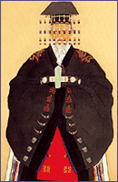 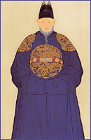 李旦（1335――1408），字君晋。初名成桂，字仲洁，号松轩。 至元元年（高丽忠肃王后四年，1335）十月十一日出生于高丽朔方道永兴郡黑石里的桓祖私邸（永兴本宫）。父亲李子春仕蒙古双城总管府，并为高丽朔方万户。李成桂少年仕高丽，官至东北面元帅知门下省事、守门下侍中。 李成桂出生和成长的时期，正是大蒙古帝国走向衰弱、东北亚大地风云跌宕的时期。元至正二十八年（高丽恭愍王十七年，1368年）正月初四，出身红巾军的朱元璋在应天即位，建立大明，改元洪武。是为洪武元年。同年明军北伐，攻占元大都，元惠宗（乌哈图可汗）北奔，作为中国历史朝代之一的元朝宣告终结。但是在这之后很长一段时间里，蒙古残余势力仍然控制着漠北，并且影响着高丽对明朝和北元的政策。 洪武二年四月，朱元璋派人前往高丽，宣告即位。高丽立即停用至元年号，遣使至应天恭贺朱元璋登极，朱元璋颁诏册封恭愍王为高丽国王，并赐金印。明丽两国宗藩关系正式建立。但是，高丽王室世代迎娶蒙古公主，而且高丽一向擅长在大国之间采取灵活的外交政策――这也是它免于被金、元这样的虎狼之国吞并的原因――而获得好处。所以高丽朝廷一直与北元朝廷也私有往来。1372年，明军在辽东败于盘踞在辽阳行省的北元将领纳哈出，高丽亲元势力也大为活跃。1373年，恭愍王被弑，北元想送高丽宗室、沈王脱脱不花回国即位，但是高丽拥立恭愍王养子辛��。1377年，北元册封辛��为征东行省左丞相、高丽国王。1378年北元昭宗去世，国力式微，善变的高丽又再次向明朝示好。 其时高丽国内分为以崔莹为首的亲元派和以李成桂为首的亲明派。两派相争，亲明派最后得胜。李成桂等新官僚废除了高丽的私田制，改行“科田法”，一扫高丽王朝的旧势力。此法不仅把土地交给李成桂去分配，还赋予了他统治国家的权力。以李成桂为首的集团完全了解，能不能带来秩序和结束衰微的高丽王国，取决于土地占有制度。高丽末年，土地兼并严重。“宗庙、学校、仓库、寺社、禄转、军须田及国人世业田民，豪强之家夺占几尽，”开始出现前所未有的“跨州包郡，山川为标”的大农庄。而兼并之家，收租之徒，“自秋至夏，成群横行，纵暴侵掠，倍于盗贼，”，许多良人农民又沦为大农庄主的奴婢。李成桂兵变上台以后，积极着手田制改革。政变当年，李成桂立即宣布将佛寺的三百多处土地收归国有，没收国家东北部和西北部的所有私田文契。1390年，焚公私田籍于市街，大火数日不灭。1391年，重新丈量全国土地，共79万多结（包括耕地和荒地），并宣布实行科田法。国家规定，京畿一带土地按科（等级）授给在京任职的官员，故称科田。第一科得田150结，依次递减，至第十八科得田10结。京畿以外的地方置军田，以养军士。地方官吏和“闲良”，不论资品高下，随其本田多少，各给军田10结或5结。从“凡受田者身死后，其妻有子媳守信者，全科传受，无子媳守信者，减半传受”看，科田和军田都允许程度不同的世袭。另有功臣田，可以子孙相传。公私奴婢、工商、卖卜、娼妓、僧尼等，不许受田。凡公私田租，水田1结糙米30斗，旱田1结杂谷30斗。除陵寝、仓库、宫司、公廨、功臣田外，有田者皆纳土地税，水田1结白米2斗，旱田1结黄豆2斗。科田、军田、功臣田都是私田，其余土地为公田；公私田的比例无资料可查，无疑公田占绝大多数。军田和科田，须向国家纳土地税，所以又是不完全的私田。重要的是国家规定公私田租的数额，“此外有横敛者，以脏论。”科田法的实施有积极意义，它限制了大农庄主的横征暴敛，有利于中央权力的加强，也多少有利于生产力的发展。根据科田法的条例，土地按人的地位（等级）来分配，通常只供有生之年享有。受田者获得租权，而农民则得到耕种权。按惯例田租为庄稼收成的一半，通常作为租税缴纳给国家。由于就耕作权而言，农民作为佃农对土地的占有得到了保障，不能被没收，他们的生活得到了改善。此外，两班（即拥有官职的贵族）的土地积累受到这样一条规定的严格控制：科田将只在首都周围的京畿地区授予，在这个地区，政府很容易加以监督和监视。李成桂及其追随者通过坚决地实行土地改革，掌握了经济大权。 这时，在1388年，明朝在咸镜南道的南端元朝双城总管府（1355年被高丽吞并）设置铁岭卫，移文告知高丽，高丽朝廷大哗。崔莹怂恿辛��铤而走险，进攻辽东。李成桂则极力反对。是年四月，辛��派兵入侵明朝。李成桂渡过鸭绿江后发觉行军困难、粮饷不济、士气低落，于是回师松京，废黜辛��，流放崔莹。之后李成桂立辛��之子辛昌为王，又废，改立高丽宗室王瑶（恭让王）。此时，李成桂已经有心对高丽取而代之。李成桂和诸子在松京展开了紧锣密鼓的布置工作。为了剪除忠于王氏高丽的势力，类似当年太原谋反时李世民角色的李成桂第五子李芳远还派刺客，在京城善竹桥刺杀了有极高声望、不肯归依李家势力的高丽大学者郑梦周，并借机刺杀了许多其他反对派。高丽京城内一片腥风血雨的恐怖景象。 明朝洪武二十五年（1392年）七月十六日，在高丽左侍中�p克廉、以及郑道传、赵浚等人的倡议推戴下，李成桂在松京（开城）寿昌宫即位。其时五十八岁。李成桂以“权知高丽国事”的头衔向明朝上表，称高丽国王昏乱，自己受推戴不得不即位。朱元璋则口气冷漠，说“尔恭愍王死，称其有子，请立之，后来又说不是。又以王瑶为王孙正派，请立之，今又去了。再三差人来，大概要自作王。我不问，教他自作，自要抚绥百姓，相通来往”。不久，李成桂拟定两个国号――“朝鲜”（古号）和“和宁”（李子春就仕之地）请朱元璋决定，朱元璋选了朝鲜二字，但是又因为李成桂“顽嚣狡诈”而不正式册封赐印。于是李成桂的头衔改成了“权知朝鲜国事”。 李成桂一即位，便追尊四世祖为王，并改名字为李旦（为统一起见，下文仍称李成桂）。同年十一月，李成桂颁诏定都汉阳，建宗庙社稷、宫室城池。同时由郑道传等人制订了《朝鲜经国典》。鉴于高丽诸王崇拜佛教而影响国事，李成桂推行崇儒抑佛的国策。寺院的土地多被没收，贵族庄园里的奴婢都被释放，并且实行开垦农地与改良农具谷种等劝农政策。 李成桂有两个王妃。原配是承仁顺圣神懿王后韩氏（籍安边），恭让王二年去世。继妃是顺元显敬神德王后康氏（籍谷山）。李成桂把神德王后所生的最小的儿子――八子李芳硕立为世子，把辅佐大任交给郑道传。郑道传当时掌握着军权和政权。对此，创业中立下功劳的五子李芳远心怀不满，终于在太祖七年（1398年）八月发动政变。当时太祖正在病中。李芳远的府邸在汉城俊秀坊，坐落在景福宫西门迎秋门附近。李芳远因势力弱小而采取了先发制人的手段，召集府中私兵和守卫景福宫的禁军，杀入宫中，冲入世子东宫――资善堂，乱刀砍死了李芳硕，然后从景福宫南门杀出，袭击大臣郑道传。郑道传的家宅号为叫百子千孙堂，在汉城寿进坊。那时郑道传正在家中同世子李芳硕的丈人沈孝生进行欢谈，乱兵杀进门来，遭受意外袭击一同身亡。掌握政权的芳远对郑道传非常仇恨，将他的住所没收改成宫中饲养马匹的司仆寺。神德王后所生的另外一个儿子李芳蕃也同在此变中被杀。是为李朝的第一次王子之乱（史称“戊寅靖社”）。 王子之乱发生后，汉城沉浸在不安和恐慌的氛围中。李芳远冲进宫中，宣布“李芳硕、郑道传谋反，图谋杀害王子”（与玄武门之变何其相似，呵呵）。在李芳远操纵下，李成桂被迫让位给二子李芳果（定宗）。神德王后康氏被李芳远从宫中赶出，搬到了判�仁谈�事李得芬家（移御所），不久就神秘地“因病”死去。 失去了王后康氏和儿子芳藩、芳硕之后，李成桂患了一种象火一样堵塞喉咙说不出话的疾病。定宗不喜欢散发着血腥味的汉城，定宗元年，李芳果以参拜神懿王后韩氏的陵墓为由，前往开京，就在开城寿昌宫定居。当年三月，李成桂也被迫移宫。当他以太上王身份离开汉城时流下了悔恨的老泪。走过神德王后的贞陵前时怎么也迈不开脚步，慨叹：“初次迁出汉阳不是我个人的意愿，是和国人们商议的。”回到开京后，又说：“我迁都汉阳后失去王妃和儿子，现在重新迁都，对都邑人们实在惭愧。” 建文二年（定宗二年，1400年），李朝再次发生变乱。为了争夺王位，精明强悍的李芳远和四兄李芳�至饺烁髯远�员私兵，在开京街头展开了激烈的巷战。在这次战斗中取胜的芳远已经不在甘心于幕后操纵，于是从名义上的国王李芳果手里接过了王位，就是李朝太宗。这一次，李成桂为了保全老命，星夜出奔，直逃老家咸兴，居住在幼年的潜邸（咸兴本宫）中。李芳远为了探问老父，多次派出所谓“问安使”，朝鲜史书中对此有生动的记载：“芳�T��後，太祖��位，奔于咸�d。太宗�仪仓惺���安，太祖�m��弓而待之，前後相望之使未敢道�_其情。�r��安使�o一得��者。太宗��君臣‘�l可遣？’莫有��之者”。后来朝鲜形容一个人被支使干一项棘手的任务（尤其是有去无回的，呵呵）的著名谚语“咸兴差使”就是这么来的。 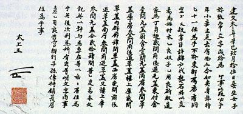 但是面对李芳远这种六亲不认的悍主，这样的父子对立终究有结束的时候。1402年十二月，李成桂被挟持回京，幽居在离宫昌德宫内。永乐六年（太宗八年，1408）五月二十四日，老迈多病的李成桂于昌德�m广延楼下�e殿去世。共计在位七年，在上王位十年，春秋七十四岁。明朝赐谥为”康献“（温良好乐曰康，聪明睿智曰献；《春官通考》则为”抚民安乐曰康，行善可纪曰献“）。这位李朝的开国君主被孤零零地一个人安葬在汉城近郊杨州俭岩山下的健元陵。 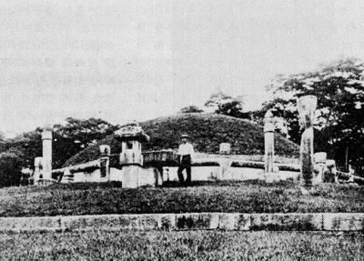 王妃 承仁顺圣神懿王后韩氏（籍安边） 高丽恭让王三年去世 葬开城丰德齐陵 继妃 顺元显敬神德王后康氏（籍谷山） 李朝定宗元年死 初草殓于汉城皇华坊，太宗二年改葬贞陵（在今汉城市内贞洞） 子女 长子 镇安大君 李芳雨 次子 定宗大王 李芳果 三子 益安大君 李芳毅 四子 怀安大君 李芳�� 五子 太宗大王 李芳远 六子 德安大君 李芳衍 以上神懿王后所生 七子 抚安大君 李芳蕃 八子 宜安大君 李芳硕 以上神德王后所生 长女 庆慎公主 二女 庆善公主 以上神懿王后所生 三女 庆顺公主 神德王后所生 庶长女 宜宁翁主 庶二女 淑慎翁主 定宗 恭靖懿文庄武温仁顺孝大王 李�� 李�撸�1357――1419）字光远，初名李芳果 元至正十七年（高丽恭愍王六年，1357）七月，出生于咸兴归州洞的李成桂私邸 （太祖潜邸咸兴本宫）。仕高丽，官至将相。 1392年，李成桂即位取代高丽，李芳果受封为永安君、官拜义兴亲军卫节度使。洪武三十一年（1398）戊寅，靖安君李芳远在都城举兵发难，朝鲜发生第一次王子之乱，世子李芳硕被杀。其时李芳果居长（长子李芳雨已死），于是册封为王世子，九月五日受李成桂禅让于景福宫勤政殿。是为李朝定宗。 李芳果即位后，实际操纵政权的是拥有兵权的五弟李芳远。即位当年，李芳果便离开了充满血腥戾气的汉城，回到高丽故都开京，先后居住在高丽故宫寿康宫、昌乐宫中。李芳果为人宽厚中庸，喜好在开城宫中玩击�轮�戏。吸取高丽朝臣专擅的教训，在定宗年间的1399年三月，李朝颁布了《奔竞禁止法》，抑制官人权贵势力。 建文二年（定宗二年，1400年），在开城发生了第二次王子之乱。这一次，李芳远已经不甘心当幕后国王了。是年十一月十三日癸酉，在百官拥戴下，李芳果在开城寿昌宫内传位于 太宗，十二月上尊号为“仁文恭睿上王”。永乐十七年（世宗元年，1419年）九月二十六日，李芳果于开城仁德宫去世，在位二年，在上王位十九年，春秋六十三。明朝赐谥为“恭靖” （敬事供上曰恭；宽乐令终曰靖）。 葬兴教洞厚陵。 王妃 顺德温明庄懿定安王后 金氏 （籍庆州）至正十五年生，永乐十年（太宗十二）年去世，终年五十八 ，同葬厚陵 长子 义平君 李元生 （淑仪池氏出） 次子 顺平君 李群生 （淑仪奇氏出） 三子 锦平君 李义生 （淑仪奇氏出） 四子 宣城君 李茂生 （淑仪池氏出） 五子 从义君 李贵生 （淑仪文氏出） 六子 ��南君 李终生 （淑仪李氏出） 七子 守道君 李德生 （淑仪尹氏出） 八子 林堰君 李禄生 （淑仪尹氏出） 九子 石保君 李福生 （淑仪尹氏出） 十子 德泉君 李厚生 （诚嫔池氏出） 十一子 任城君 李好生 （淑仪池氏出） 十二子 桃平君 李末生 （诚嫔池氏出） 十三子 长川君 李普生 （淑仪尹氏出） 十四子 贞石君 李隆生 （淑仪奇氏出） 十五子 茂林君 李善生 （淑仪奇氏出） 长女 咸阳翁主 （淑仪池氏出） 二女 淑慎翁主 （淑仪奇氏出） 三女 德川翁主 四女 高城翁主 五女 祥原翁主 六女 全山翁主 七女 仁川翁主 （淑仪尹氏出） 太宗 恭定圣德神功建天体极大正启佑文武睿哲成烈光孝大王 李芳远 李芳远（1367――1422）字遗德 元至正二十七年（恭愍王十六年，1367）五月十六日出生于咸兴归州洞私邸 （咸兴本宫），母亲是神懿王后韩氏。李芳远从少年时代起便英果聪毅，洪武十五年（1383年）擢高丽进士，癸亥登文科，官至密直司代言。在李成桂谋代高丽的过程中，李芳远出力最大。为了给父亲篡位扫清道路，他和判典客寺事赵英��一起在开城选地桥（善竹桥）刺杀了高丽大贤郑梦周。 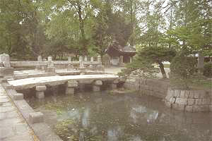 开城善竹桥 李成桂即位后，李芳远被封为靖安君。洪武年间，他多次前往明朝。尤其是洪武二十六年朝鲜贡马，他随贡使前往南京，路过北平时与燕王私相会见，两人性格相近，相谈甚欢。由于李成桂晚年丧妻，续娶神德王后康氏，前妻韩氏所出诸子一直与其不睦，李芳远尤过之，康氏因此对其侮慢无礼。而出于对继室幼子的溺爱，李成桂立最幼之子李芳硕为世子。这就为后来朝鲜宫中巨变埋下了伏笔。而李芳远既然有辅佐父亲篡位的本事，自然也有招募私兵暗做筹备的本事。 经过前文所说的两次王子之乱，在建文二年（定宗二年，1400年）被册封为王世子，十一月十三日受其大兄禅让于松京寿昌宫。 此时，明朝发生了一场极大的变局。太孙朱允�杉次唬�燕王起兵靖难，惠帝用人不当，渐处下风，被迫对朝鲜更多地采取怀柔政策。为了在内战中拉拢朝鲜站在朝廷一方，当他得知李朝定宗传位于弟，便敕谕礼部，“朝鲜本礼文之国，辞位传袭之事，……若果无亏天理，悖人伦的事（呵呵，讽刺得妙极），任他国中自主张”。于是方赐朝鲜太宗国王诰命，及亲王爵的九章冕服（朝鲜本郡王爵，应赐五章或七章服）。这样，李成桂和李芳果多次求而不得的明朝册封，终于被李芳远得到了。他的头衔也从其父兄的“权知朝鲜国事”变成了朝鲜国王。而与其相厚，又均为夺位而成的明成祖“靖难”成功，登极之后，李芳远又再次上贺表，请冠冕服饰，于是再次得到了明朝所赐的金印、诰命、冕服、九章、圭玉、��玉、妃珠翠七翟冠、霞帔、金坠、经籍彩币表里……。 李芳远在位期间，完善了其父的“科田制”，没收大量“私田”、“别赐田”、“寺院田”，颁布《功臣田传给法》。创立了官员向国王个人负责的“六曹直启制”。1403年改革行政区划，撤去高丽时代沿袭下来的一留都府、五都护府、六府、二十牧，并改高丽的五道两边为八道。1417年设立都巡问使、都观察黜陟使、都安抚使三言官。有感于两次王子之乱的教训，在1400年，太宗废除高丽的私兵制，实行统一的府兵制，集兵权于中央。还召集都内衣冠子弟，设立“鹰扬卫”和“别侍卫”。1415年改革军制，设立守城军、营镇军、杂色军三种级别。李芳远在位期间，还修订了《经济六典元集详节》, 《续集详节》、《�v源录》等书籍。 1413年9月，李朝宣布实行号牌法。国家规定10岁以上70岁以下的男子均按身分佩带一种号牌，上书姓名、住址、面色、身长、有无胡须等，在发牌时进行户口登记。如有不戴或伪造、遗失、借用者，要受处罚。两班贵族的号牌用象牙或鹿角制成，平民的则用杂木。1407年起实行邻保制，以连环保的方式加强统治和保证对国家的负担得以实现。李朝实行奴婢辩正，把高丽末期沦为奴婢的人改为良民，把寺院的私奴婢改为国家控制的公奴婢，使国家能够掌握更多的劳动力和兵源。 永乐十六年八月八日，五十二岁的李芳远位于世宗。十一月，上尊号“圣德神功大王”。永乐二十年（世宗四年，1422）五月十日，他在汉城泉达坊新宫去世。共计在位十八年，在上王位四年，享年五十六岁。他死后，明朝赐谥号为“恭定” （敬事供上曰恭；纯行不爽曰定）。肃宗九年加上谥号“睿哲成烈”，高宗九年追上尊号“建天体极大正启佑”。葬于献陵 （在京畿道广州大母山） 王妃 彰德昭烈元敬王后 闵氏 （籍骊兴） （骊兴闵氏自此为朝鲜望族，五百年间出了多位王后） 至正二十五年（高丽恭愍王十四年）生，永乐十八年去世，终年五十六岁，合葬献陵 子女 嫡子 长子 让宁大君 李�| 次子 孝宁大君 李�a 三子 世宗大王 李�� 四子 诚宁大君 李�~ 长女 贞顺公主 二女 庆贞公主 三女 庆安公主 四女 贞善公主 庶子 二子 �P宁君 李�P （信嫔辛氏出） 三子 温宁君 李裎 （信嫔辛氏出） 四子 谨宁君 李裎 （信嫔辛氏出） 五子 惠宁君 李祉 （安氏出） 六子 熙宁君 李�� （淑仪崔氏出） 七子 厚宁君 李�r （崔氏出） 八子 益宁君 李■ （善嫔安氏出） 长女 贞惠翁主 （懿嫔权氏出） 二女 贞信翁主 （信嫔辛氏出） 三女 贞�o翁主 （信嫔辛氏出） 四女 淑贞翁主 （信嫔辛氏出） 五女 昭善翁主 六女 淑惠翁主 （昭嫔卢氏出） 七女 淑宁翁主 （信嫔辛氏出） 八女 昭淑翁主 （安氏出） 九女 淑庆翁主 （信嫔辛氏出） 十女 敬慎翁主 （安氏出） 十一女 淑安翁主 （金氏出） 十二女 淑谨翁主 （信嫔辛氏出） 十三女 淑顺翁主 （李氏出） 世宗 庄宪英文睿武仁圣明孝大王 李�� 李��（1397――1450）字元正 洪武三十年（太祖六年，1397） 四月十日出生于汉城的太宗潜邸。永乐六年（太宗八年）封忠宁君，四年后进封大君。其时朝鲜的世子是太宗的嫡长子李�A，永乐二年册封，王位似乎与李��无关。永乐十六年（1418年），朝鲜宫中发生变动。根据明史记载，“……十六年奏世子�A不肖，第三子��孝弟力学，国人所属，请立为嗣，诏听王所择。因上表谢，并陈己年老，请以��理国事。命光禄少卿韩确、鸿胪丞刘泉封��为朝鲜国王……”。世子被废为让宁大君，而忠宁大君李��则被太宗册封为王世子，是年八月八日,李��受其父禅让,于景福宫勤政殿登基。是为朝鲜乃至东亚历史上最为贤明的国王之一――李朝世宗大王。 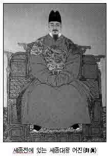 世宗以精通儒学而著称。除了将儒学价值观念作为治国之策的根本以外，还能够自如地对付两班学者。在十五世纪中叶他统治期间，在国家管理、语音学、民族文字、经济学、科学、音乐、医学和人文学研究方面都表现出进步思想。在政治方面，世宗建立了集贤殿，以促进体制传统和政治经济方面的研究。还加强了中央集权的“六曹直启制”和“议政府署事制”，并且让世子协助处理庶务。朝鲜王朝初期政治制度不完善的现象在世宗年间得到了改善。世宗时期还制订了五礼（吉礼、嘉礼、宾礼、军礼、凶礼）和士庶四礼：冠礼、婚礼、丧礼、祭礼。他还对当时朝鲜的农民生活表现出巨大关注，为了减轻农民贡税负担，设置贡法详定所，由其制定了田分六等法、年分九等法、结负法，按照田地等级和年份丰瘠征收不同水平的赋税，并且在发生水旱灾害时提供救济。世宗还命郑招编纂《农事直说》，内容为从全国经验丰富的老农那里收集来的材料。这是朝鲜第一部农书，成了朝鲜农业的经典著作。此外还修订了《农桑辑要》、《四时纂要》 、《本国经验方》等农事书籍。世宗还下令编纂医书，表明他对人民健康的关注。公元1433年，完成了一部共有365章的《医方类聚》和共有85章的《乡药集成方》。后一部书包括959条疾病诊断，10706个处方和1477个针炙疗法。还用本国语文出版了一部关于如何采集本地药材的书藉《乡药采集月令》。 世宗大王最著名的成就之一，是召集郑麟趾、成三问、申叔舟、朴彭年、崔恒、李善老、李�N等著名学者，创立了韩文字母（Hangul）。韩文字母由11个元音和28个辅音组成，具有简单和精确的特点，没有受过教育的人都能在几小时内学会。儒家学者大为反对，说使用韩文字母会妨碍儒学研究。世宗则坚持推行韩文。并于公元1446年颁布了《训民正音》。官方书面语言仍然是中文，就象拉丁文在欧洲那样，但是朝鲜的下层人民却有了一种书写自己语言的手段，创作了讴歌王朝建立的韩中两种语言写成的颂诗《龙飞御天歌》，并把《释谱详节》（佛祖生平片断）一书译成韩文。这两本著作为韩文的实际使用奠定了基础。 在科学文化方面，世宗于公元1442年下令试制雨量计，并把复制品分发给汉城的钦天监和地方行政长官，以纪录降水量。世宗对天文学的兴趣非常广泛，在他的鼓励推动下，汉城简仪台制造了浑天仪、浑象仪、正方案、圭表等天文仪器，以及仰釜日晷、悬珠日晷、天平日晷、定南日晷、自击漏、玉漏等计时仪器，绘制了天文图和七个星球的图集。还在汉城惠政桥安装了供公众核对时间的计时仪器。历法方面，制定了《七政算�绕�》、《七政算外篇》、《诸家历象集》等历法书籍。世宗还命人修订韩国音乐的记谱法十二律，创作了朝会雅乐、会礼雅乐、祭礼雅乐，以及《定大业》、《保太平》、《发祥》、《凤来仪》等朝乐大曲，以及《凤凰吟》、《满殿春》、《与民乐》等曲目。  军事方面，当时的朝鲜发明了小火炮和火炮箭，设立了火炮铸造所。在对外关系上，世宗对当时朝鲜东北的女真部落采取强有力的措施。东北边疆地区的大片土地被朝鲜吞并，大将金宗瑞1434年平定东北女真部落之后，在那里建立了会宁、稳城、钟城、庆源、庆兴和茂山六镇。公元1443年，世宗在北部边境设置了闾延、慈城、茂昌、虞芮四郡，并向日本人开放三个港口以利贸易。世宗的土地税改革、保健政策和创制韩文字母，全都有助于改善人民生活，因而也有助于唤醒人民。世宗使儒教国家名副其实地得到了实现，并在人们心目中造成了一种现代国家意识。他虽然在早先曾没收了寺庙的土地和农权，并在其他方面限制佛教，但后来在昭宪王后死后变得特别崇奉佛教。在那段时间，他的健康日益不济，于是准备象其父亲一样，把王位禅让给世子文宗（1450-52在位），但是不久就去世了。不幸的是，他留下的国家稳定繁荣的局面没有被他短寿的继承者保持下来。 景泰元年二月十七日，世宗大王在汉城永膺大君府邸内去世，在位三十二年，享年五十四岁。明朝赐谥“庄宪” （严敬临民曰庄；行善可纪曰宪），定世室。初葬广州献陵，睿宗元年移葬骊州城山英陵。 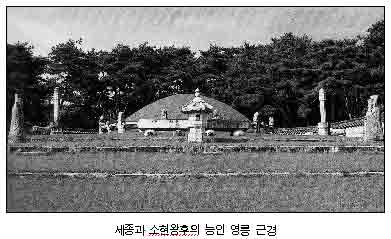 王妃 宣仁齐圣昭宪王后 沈氏 （籍青松） 洪武二十八年（太祖四年） 生，正统十一年（世宗二十八年） 在别宫去世，享年五十二岁。合葬英陵。 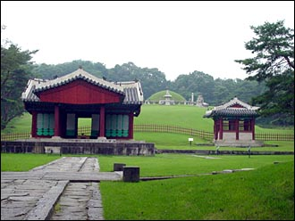 子女 长子 文宗大王 李�� 次子 世祖大王 李�y 三子 安平大君 李�� 四子 临��大君 李�G 五子 广平大君 李�_ 六子 锦城大君 李瑜 七子 平原大君 李琳 八子 永膺大君 李琰 长女 贞昭公主 二女 贞懿公主 庶子 一子 和义君 李璎 （令嫔姜氏出） 二子 桂阳君 李�Q （慎嫔金氏出） 三子 义昌君 李�Y （慎嫔金氏出） 四子 汉南君 李■ （惠嫔杨氏出） 五子 密城君 李琛 （慎嫔金氏出） 六子 寿春君 李�t （惠嫔杨氏出） 七子 翼岘君 李�Q （慎嫔金氏出） 八子 永�Q君 李�Q （惠嫔杨氏出） 九子 宁海君 李瑭 （慎嫔金氏出） 十子 潭阳君 李�S （慎嫔金氏出） 长女 贞显翁主 （尚寝宋氏出） 二女 贞安翁主 （淑媛李氏出） 龙飞御天歌 植根深厚的树木 风吹也不动摇 花儿常开 果实累累 根底深厚的泉水 日晒也不枯竭 汇入江底 直到大海 …… 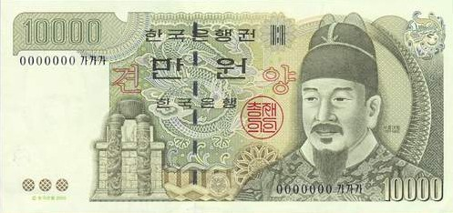 韩国发行的一万韩元正面，图案为世宗大王头像，以资纪念。韩国和朝鲜对世宗大王都评价甚高。在韩国，有世宗文化中心、世宗路……，韩国的南极科学考察站也被命名为世宗王站。 文宗 恭顺钦明仁肃光文圣孝大王 李�� 李��（1414――1452）字辉之 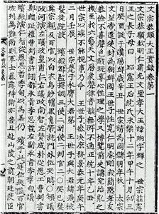 永乐十二年（太宗十四年，1414）出生于世宗潜邸。六岁的时候被封为王世子。二十三岁的时候（世宗十九年，1437）开始协助父亲世宗大王处理庶务。景泰元年（世宗三十二年，1450）即位于景福宫勤政门。文宗体弱多病，而且一改李朝崇儒抑佛的政策，有好佛倾向，不仅在宫中修建内佛堂，并对全国的寺庙进行布施供养，并因此遭到儒臣言官的劝谏。但是佛祖并没有保佑他享国长久。文宗在位仅仅两年，便在景泰三年（1452年）因病死去，终年三十八岁。葬杨州显陵。 王妃 仁孝顺惠显德王后 权氏（籍安东） 永乐十六年（1418年）生。世宗十三年（1431年）册封良媛，世宗十九年（1437年）册封世子嫔。正统六年（世宗二十三年，1441）去世，终年二十四岁。合葬显陵 子女 长子 端宗大王 李弘�� 长女 敬惠公主 庶长女 敬淑翁主（司则杨氏出） 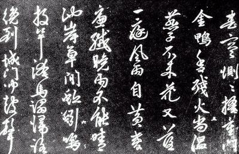 端宗 恭懿温文纯定安庄景顺敦孝大王 李弘�� 李弘�ィ�1441――1457） 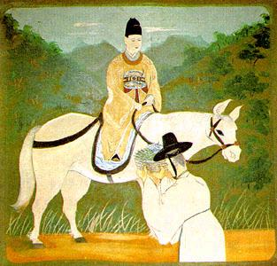 正统六年（世宗二十三年，1441）七月二十三日出生于朝鲜王朝的东宫――景福宫资善堂。父亲是当时的王世子，后来的文宗。正统十三（1448）年被封为王世孙，景泰元年（1450）册封王世子。景泰三年（1452）五月十八日即位于景福宫勤政门。一年后，景泰六年（1455年），他的叔父首阳大君和大臣韩明浍、郑麟趾勾结，杀死了皇甫仁、金宗瑞等顾命大臣而夺取政权，是年闰六月十一日，端宗被迫禅位于世祖，七月尊为恭懿温文太上王。 端宗被篡后被幽于昌德宫，一批忠臣密谋拥戴其复位，但是被人出首密告。为了警告仍然拥护端宗的那些大臣，世祖在景泰七年（1456）悍然下令处死了为首图谋拥戴端宗的成三问、俞应孚、金文起、朴彭年、河纬地、李�N六人，世称“死六臣”。发明朝鲜文字的著名大学者成三问在临刑前做绝命诗两首： 击鼓催人命 回首日欲斜 黄泉无一店 今夜宿谁家 食人之食衣人衣 素志平生愿莫违 一死固知忠义在 显陵松柏梦依依 事后两百余年，如同明朝末年为方孝儒等人平反一样，李朝的肃宗、正祖、高宗等国王也纷纷为这些王朝忠臣平反，并赠谥号，皇甫仁为忠定，金宗瑞为忠翼，朴彭年为忠正，成三问为忠文，大加旌表，修碑纪念。 天顺元年（1457）六月，端宗被流放于外，降封鲁山君。最初的流放地在江原道清泠浦，该地三面为深水，仅剩一面则是险峻的悬崖，只有乘船渡江才能出去。该年夏天这里发生洪灾，于是世祖将其迁到更险恶的宁越，并在同年十月二十四日下了最后的毒手。在世祖派来的使者面前，年轻的鲁山君于宁越的观风梅竹楼内被赐药鸩死，尸体被使者抛入江中，最后由宁越的一个小户长偷偷收尸安置，这个户长一家都因此被杀害。 端宗共计在位三年，在上王位二年，终年十七岁。肃宗七年追封为大君，二十四年追尊复位，上庙号端宗。无嗣。葬于江原道宁越郡的庄陵。这也是李朝五百年间，唯一一座不在京畿的王陵（追封的各王不算）。 王妃 懿德端良齐敬定顺王后宋氏 （籍砺山） 正统五年 （世宗二十二年） 出生，景泰五年正月二十二日册封王妃，次年七月被世祖尊为懿德王大妃，天顺元年六月降为夫人。正德十六年（中宗十六年） 六月四日去世，终年八十二岁。肃宗二十四年追复位。葬杨州思陵 世祖 惠庄承天体道烈文英武至德隆功圣神明睿钦肃仁孝大王 李�y 李�y（1417――1468）字粹之 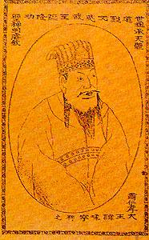 永乐十五年丁酉 （太宗十七年） 九月二十九日出生于世宗本宫。宣德三年 （世宗十年）封晋平大君，后改咸平，又改晋阳，最后改为首阳大君。 自称“小中华”的朝鲜历史，与中国历史有惊人的相似之处。太宗李芳远屠兄杀弟，逼父退位，就与唐太宗李世民很相象，而据说自幼“聪敏”的首阳大君则表现出了与明朝太宗文皇帝一样惊人的本事――篡位。 文宗去世后，任命了皇甫仁、金宗瑞、成三问等一批顾命大臣辅佐年幼的端宗。1453年，首阳大君勾结大臣郑麟趾、韩明浍，出其不意地扑杀了皇甫仁、金宗瑞、南智等顾命大臣。史称“癸酉靖难”。之后首阳大君把持朝政，逐渐剪除反对篡位的朝臣。三弟安平大君李��及其儿子宜春君李友直、六弟锦城大君李瑜也因此被废为庶人，流放江华岛的乔桐，不久赐死（英祖年间复爵昭雪，高宗以南阳君为安平大君之后）。韩明浍等人则被封为“靖难功臣”。广赐封田，并让次子（后来的睿宗）娶韩明浍之女为夫人。 景泰六年（1455年）闰六月十一日乙卯，首阳大君受禅于景福宫勤政殿。是为世祖大王。明史中对此事件的记载是“……弘�チ⑷�年，以年幼且婴夙疾，请以叔�y权国事。七年上表逊位，乃封�y为国王。�y请立子�牢�世子，从之”，朝鲜奏闻使完全掩盖了其中的血腥残酷。 端宗被废之后囚禁于昌德宫内。一年之后，1456年，发生了大臣成三问等人图谋拥戴端宗复位的密谋。成三问等六人被处以用烧红的铁钳活剥皮的极刑，是为“死六臣”。此外还有金时习、南孝温等六位大臣则辞官引退，终生不仕世祖，是为“生六臣”。这次密谋失败之后，年轻的端宗被废去上王的尊号，降为鲁山君，流放到荒凉的江原道深山之中。又过了一年，公元1457年十二月，为了斩草除根，端宗在郑麟趾等人的奏请下被赐死。 世祖尽管夺位手段残暴，但是即位之后治国的确很有手段。在世祖年间，朝鲜王朝的政治制度得到了充分的完善和发展，制订和修订了《经国大典》、《经济六典》等典籍。《经国大典》是李氏王朝治国的基石，规定了朝鲜王朝的各方面体制制度：在哲学思想上中国的程朱理学占据正统的地位，推行“崇儒抑佛”的礼治政策；同时又仿效中国历代封建社会的中央集权制，确立国王享有主宰一切的绝对权威；在经济上实行“农本民生主义”，改良地制实行邻保制；在社会关系上实行两班（文武贵族）统治庶民的严格的等级制；在司法上为保全封建集权制沿袭中国的“唐律”和“大明律”制定各种法令。这些治国方略在《经国大典》中都有规定，在古朝鲜政治、司法、文化史上具有特殊的意义，被朝韩史学界珍视为研究古朝鲜司法文化的不可多得的资料，也是研究东北亚汉文化史的主要依据之一。世祖时修订的《经济六典》则撰于太祖年间，包括吏典、户典、礼典、兵典、工典等“六典”，是朝鲜历史上第一部国家统一的法典，具有官撰的性质，因而又具有法律效力世祖还关闭了集贤殿，废除了承政院中的一些职位，并使司谏院趋于瘫痪，并且设置了观察黜陟使、五卫镇抚所、兵马都节制使等官职和机构。为了能够实现所谓“下意上通”、“上命下达”，世祖命令辅佐其篡位的一些“靖难功臣”可以“参判”六曹的政务。这些措施的目的都有显了削弱思想上对君权的节制。设立了春秋馆，表面上是为了促进儒学。事实上，它仅仅被用作王家图书馆，而不是一个旨在促进和传播儒家思想的机构。此外，他还开创了私下接见个别官员的做法。无视有关国王接见官员必须有史官和承政官员在场的规定。 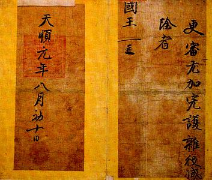 由于当时的朝鲜君主受到两班（指朝会时列于殿中的东班、西班，也就是文武官员）无节制的压力，有人出来为设法提高君主地位的做法辩护。世宗时代的一位富有才华的学者梁诚之数度上疏，为君主的权力辩护。梁诚之强调朝鲜的独特地位，力陈维护固有传统的必要性。据他说，檀君是“天子统治者”。他提出这样的论点：朝鲜与中国一样，是被赋予天命的国家。这种论点加强了世祖对付行政系统的地位。 世祖下令绘制朝鲜详图，以加强对边远地区的控制。对各个地区的所有军人和后备役人员实行人口统计，并强化了要求全体国民携带身份牌的国民登记法。他在每一个道设置了人数众多的卫戍部队，并命令每一个城镇生产武器。世祖通过慷慨的田地赐予和医药安排，显示了对军人福利的关注。他还命令人们移居到人口稀少的北部边境地区去。东北方面，当时的朝鲜与建州女真多次交战，巩固了边境安全。世祖在任命新的官吏问题上采取果断行动，增加武备学堂毕业生的数目来进一步加强军权。 世祖曾经连续三次封功臣，以扩大效忠拥护的基础。可是，随着赐给功臣的可以继承的土地数量的增加，可供拨给新任命官吏的采邑土地减少了。为了解决这个问题和限制官吏和两班的经济权力，世祖制定了职田制，这种新制度只允许在任职期间对所分拨的田地收取田租。这样一来两班藉以享受终生田产权的科田制就终止了，那些不妥协分子便丧失了他们的田产。这种把授予土地限于现职官吏的制度意味着拥有土地的原有两班阶级不是改变为拥有土地的在职官吏阶层，就是徒具空名的“无地两班”。 除了久已确立的每三年一次的科举考试以外，他还更经常地举行临时的文官和武官考试。由于临时考试中考试及第者的人数以2比1的比例超过定期考试及第者的数目，这种做法实际上使科举考试制度任由君主摆布。为了分散儒教学者对其篡位、谋逆、弑君的注意力，世祖借支持道教和佛教来藐视儒教正统，设立了刊经都监，繁忙地进行编篡佛教典籍和把这些典籍译成韩国文字的工作。印刷了五十部卷帙浩繁的《高丽大藏经》。为了使以往以中国为学术研究中心的学者们有一部关于他们自己国家的全面的历史，公元1458年开始了编写史书《东国通鉴》的工作，这项工作在世祖死后完成。 世祖晚年得了一种怪病。据史书记载，在端宗被害后，世祖在晚年连连被往日的恶行所导致的噩梦纠缠，曾经在梦中梦见嫂子显德王后痛斥他的谋反篡位，还连连向其唾弃。世祖惊醒之后，全身在梦中被唾过的地方便开始长出恶疮，腥臭溃烂，苦不堪言，召集全国的名医诊治也没有效果。最后信奉佛教的世祖认为这是自己以前所犯罪恶的报应，于是访遍全国的名山古刹，祈祷赎罪，并在五台山月精寺修行数月。一次，世祖去山间溪水中沐浴，一个童子为其擦背，当时为了提防暗杀，世祖规定凡是触摸到国王身体的人都要斩首。那个童子说：“国王殿下的罪行受到了文殊菩萨的谴责”，说完便消失了。世祖悚然而惊，终于改变了残忍好杀的习性。 成化四年（1468年）九月七日，饱受病痛折磨的世祖传位于睿宗，次日在太上王宫寿康宫（今汉城昌庆宫）正殿――明政殿去世。在位十三年，终年五十二。明朝赐谥“惠庄”（柔质慈仁曰惠；严敬临民曰庄），定世室，葬杨州光陵。其身后功过，留给了后人去评说――不过终李朝之世，朝鲜的儒家学者们对世祖的篡位行为基本都是腹诽的。 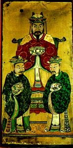 王妃 慈圣钦仁景德宣烈明顺元淑徽慎惠懿神宪贞熹王后 尹氏（籍城平） 永乐十六年生，宣德三年嫁，初封乐浪府大夫人，景泰六年册封王妃。成化十九年 （成宗十四年，1483）去世，终年六十六，葬光陵 子女 长子 德宗大王 李�溃�李崇）（懿敬世子） 次子 睿宗大王 李�s 长女 懿淑公主 庶子 长子 德源君 李曙（谨嫔朴氏出） 次子 昌原君 李晟（谨嫔朴氏出） 睿宗 襄悼钦文圣武懿仁昭孝大王 李�s 李�s（1450――1469）字明照，初字平甫 景泰元年（世宗三十二年，1450）正月出生于世祖私邸。初封海阳大君，长兄李�廊ナ篮螅�于天顺元年（世祖二年，1457）册封王世子。受禅于寿康宫。成化五年（1469年）十一月二十八日在景福宫紫薇堂去世，在位一年，终年二十。明朝赐谥襄悼（因事有功曰襄；未中早夭曰悼） 。葬高阳昌陵 王妃 徽仁昭德章顺王后 韩氏 （籍�[州） 正统十年 （世宗二十七年）生，天顺四年 （世祖五年） 册封世子嫔，次年于私第去世，终年十七岁。成宗三年追尊为王后。葬坡州恭陵。 继妃 仁惠昭徽齐淑安顺王后 韩氏（籍�[州）成化四年册封王妃，弘治十一年（燕山君四年） 于昌庆宫内去世，葬昌陵 子女 嗣子 成宗大王 李�溃ㄐ周簿词雷永��乐�次子，承睿宗肆，兼祧两房） 长子 仁城大君 李粪 （章顺王后生），未娶卒，继子瑞城君李�� 次子 齐安大君 李�K （安顺王后生），出继七叔平原大君李琳之后 长女 显肃公主 （安顺王后生） 德宗 怀简宣肃恭显温文懿敬大王 李�溃ㄗ汾郑�未即位） 李�溃�1438――1457）字原明，初名李崇 正统三年（世宗二十年,1438）九月十五日生于宫中。景泰四年（端宗元年） 升承宪大夫。景泰六年（端宗三年）册封王世子，天顺元年（世祖二年，1457）九月二日去世，终年十九。追谥懿敬世子。成宗二年追尊为王，并奏请明朝赐谥怀简（慈仁短折曰怀；平易不訾曰简）（明史：十年追赠�栏甘雷��牢�国王，谥怀简，母韩氏为王妃，从所请也）。葬高阳敬陵 王妃 仁粹徽肃明懿昭惠王后 韩氏 （籍�[州） 明朝宣授光禄寺少卿、朝鲜左议政西原府院君韩确女。正统二年（世宗十九年）生，景泰六年乙亥册封粹嫔，成宗进册为仁粹王妃。弘治十七年（燕山十年）去世于昌庆宫景春殿，终年六十八。葬敬陵 子女 长子 月山大君 李婷 次子 成宗大王 李�� 长女 明淑公主 成宗 康靖仁文宪武钦圣恭孝大王 李�� （1457――1494） 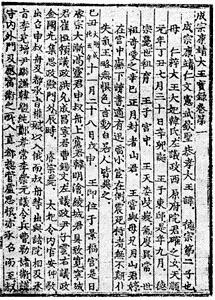 天顺元年 （世祖二年，1457）七月三十日生。1461年封者山君。1468年改封（者乙）山君。成化五年（1469）十一月二十八日，睿宗去世。因其长子早夭，次子年幼，所以奉世祖大王大妃（太王太后）贞��王后之命，李�廊氤写笸常�于当天即位于景福宫勤政门。明史对此事的记载是“……�s病笃，以所生子幼，命其兄故世子�琅�子�雷尤ü�事，遣陪臣以闻。及卒，赐谥襄悼，命�浪梦唬��榔藓�氏封王妃”。是为李朝成宗。成宗即位后，一直由贞��王后垂帘听政，直到（成宗七年，1476年）才开始亲政。 这种继承关系有些奇怪。按说睿宗本有两子，虽然长子早夭，但是还有次子。大王大妃的本意，可能是想将王位传回李�酪幌担�所以让睿宗次子出继平原大君为后，干脆排除了他继承王位的可能。反过来让成宗承睿宗之嗣。但是，按照儒教宗法，成宗生父李�谰筒挥Ω帽蝗衔�是成宗的父亲了。而根据《�v源系�V》，德宗嗣子也是成宗而不是成宗的长兄月山大君。这种情况，同明世宗即位的“继统不继嗣”还是有区别。我想可能类似清朝宣统为穆宗之嗣、兼祧德宗的做法。 成宗年幼即位，当时给国王讲课是反世祖的儒教士大夫，他们废除了世祖和睿宗时代宫中的佛教仪式和朝廷生活中其他不正常现象。这位可怜的幼主每天要按严格的日程上两至四次课。春秋馆除了给国王讲课以外，还被扩大成为进谏机构。每天照例向国王大量灌输儒家思想，于是国家对佛教的支持逐渐减少，颁布了《度僧法》。在成宗在位期间，官吏从官田收租收税作为私人收入的权利（职田制）开始衰微。在新设的读书堂（又名湖堂，位置在汉城南郊龙山豆毛浦）内，青年学者受到良好对待并得到晋升的机会。通过开设经筵，儒教在国王施政中再度恢复了自己的地位。出自朱熹理学的朝鲜性理学说也开始兴起。 当时朝鲜实施了一个雄心勃勃的出版计划，刊印了诸如《大典续录》这样的著作。还印行了一部朝鲜与中国文学选集《丝纶全集》和一部关于传统音乐的附插图的教本。然而，恢复儒家统治的这些努力还不能满足广大学者的要求。他们当中一些在世祖在位期间，因为反对篡位而曾遭受歧视的人在朝廷中立住了脚，但是经济状况并没有重大改善。在对官吏的土地实行由中央收取和分配田租（官收官给法）之后，官吏和两班谋求在耕种权方面取得对土地的控制，从而侵犯了农民的土地权份额。此外，土地面积由于开垦荒地而增长，而这又进一步促进农业庄园的增加，但是朝鲜王朝却试图阻止这一进程。一些农庄搜罗了奴婢和农民。另一些则放弃自己的自由地位，以逃避沉重的土地税，徭役和贡税。由于获得官职之路向反世祖的各派开放，拥有地产的欲望变得更加强烈，但是争取获得官职的竞争也变得更加激烈。业已确立了功臣田、特别赐田、已开垦土地和积累土地耕种权的拥有者地位的人成了人们抨击的目标。 成宗在位年间，除东北女真时有侵扰外，朝鲜内外均无大的忧患，而朝廷当中，已经俨然分成了勋旧势力和新进的士林势力两大派别。李朝由此开始走向文恬武嬉、兵备废弛、党争加剧的时代。 弘治七年（1494）十二月二十四日，成宗去世于昌德宫之大造殿。在位二十五年，春秋三十八。明朝赐谥为“康靖”（温良好乐曰康；宽乐令终曰靖）。定世室。葬广州宣陵。 王妃 徽懿慎肃恭惠王后 韩氏 （籍�[州） 景泰七年 （世祖元年，1456） 生于莲花坊私第，成化三年迎娶，睿宗元年（1469）成宗即位后册封王妃。成宗五年在昌德宫求贤殿去世，终年十九。葬坡州顺陵 废妃 尹氏 （籍坡平） 原封淑仪，1476年册封王后，1479年废，1482年赐死 继妃 慈顺和惠昭懿钦淑贞显王后 尹氏 （籍坡平） 天顺六年（1462）生，成化九年入大内，初封淑仪。尹氏被废后册封为王妃。嘉靖九年 （中宗二十五年，1530） 去世，终年六十九。葬广州宣陵 子女 长子 中宗大王 李怿（晋城大君） 长女 慎淑公主（均为贞显王后生） 庶子 长子 燕山君 李隆 （废妃尹氏出） 二子 桂城君 李恂 （淑仪河氏出） 三子 安阳君 李■ （贵人郑氏出） 四子 完原君 李■ （淑仪洪氏出） 五子 桧山君 李恬 （淑仪洪氏出） 六子 凤安君 李■ （贵人郑氏出） 七子 甄城君 李�� （淑仪洪氏出） 八子 益阳君 李怀 （淑仪洪氏出） 九子 利城君 李惯 （淑容沉氏出） 十子 景明君 李忱 （淑仪洪氏出） 十一子 全城君 李忭 （贵人权氏出） 十二子 茂山君 李�� （明嫔金氏出） 十三子 宁山君 李�w （淑容沉氏出） 十四子 云川君 李■ （淑仪洪氏出） 十五子 杨原君 李�� （淑仪洪氏出） 长女 惠淑翁主 （淑仪洪氏出） 二女 徽淑翁主 （淑仪金氏出） 三女 恭�跷讨� （贵人严氏出） 四女 庆顺翁主 （淑容沉氏出） 五女 敬淑翁主 （淑仪金氏出） 六女 静顺翁主 （淑仪洪氏出） 七女 淑惠翁主 （淑容沉氏出） 八女 庆徽翁主 （淑容权氏出） 九女 徽静翁主 （淑仪金氏出） 十女 静惠翁主 （贵人郑氏出） 十一女 静淑翁主 （淑仪洪氏出） 燕山君 李隆 （1476――1506） 注：隆字有竖心旁 成化十二年（成宗七年，1476）生于宫中。母废妃尹氏。成化十九年（成宗十四年，1483）封为王世子。母妃被废后，世子受成宗的母亲仁粹大妃韩氏的保护，并没有因此受到影响。1494年成宗去世，其时成宗正室贞显王后所生之子（晋城大君）方六岁，本来贞显王后可以篡改遗诏，借机垂帘，但是仁粹王后的存在显然使其垂帘的名义不甚正当。大王大妃仁粹王后宣布根据遗诏，按照立长的原则立世子为王。 燕山君是李朝历史上第一位废王（象端宗或者定宗那样禅让的不算被废，仍然可以入宗庙）。朝鲜史书评价其人是“悖恶”，为了镇压朝臣，制定了寸斩、炮烙、拆胸、碎骨飘风等酷刑。当然，考虑到官修史书妖魔化被废君主的要求，其中肯定是有水分的。 15世纪末，李朝的政治腐败，党争不绝。在朝的功臣勋旧官僚集团称“勋旧派”，在书院接受儒家教育的两班子弟和靠科举入仕的新官僚称“士林两班”或“士林派”，两派相互斗争不已。成宗不满勋旧派的飞扬跋扈，利用士林派加以遏制，士林派势力膨涨。1498年继位的燕山君曾经要为生母废妃尹氏立庙并举行隆重的佛教招魂安葬仪式，从而与士林派发生矛盾，转而依靠勋旧派清洗士林派。后来还借口大臣权柱在成宗赐死废妃尹氏的时候赐药而将其流放绞杀。1498年，借口士林派名臣金宗直的一名学生在其历史文稿中影射世祖篡位，李克墩、柳子光等勋旧派大臣，利用国王的愤怒怂恿燕山君把士林派全部驱逐出政府，酿成“戊午士祸”。六年之后又发生了“甲子士祸”。从此朝鲜党争不绝，倾轧排挤，以至互相诛戮。 因为燕山君而倒霉的不仅只有士林派。因为有大臣用训民正音文字写招贴批判燕山君，所以燕山君下令禁止使用正音。刚创建不久的朝鲜民族文字发展因此陷入了停顿。在佛教方面，李朝太祖、世祖崇佛，而太宗、世宗废佛。燕山君原本随顺祖母仁粹大王大妃崇信佛教，太后去世后，态度一转，开始和太宗、世宗一样对佛教加以破坏。他撤去三角山藏义寺佛像，赶走寺内僧侣，将教宗首刹兴德寺的佛像废去，寺院改为官用。1504年，他还废掉朝鲜禅宗首刹兴王寺，移佛像至桧岩寺，改圆觉寺为妓院；自高丽以来所举行的僧科制度也被迫废止。不久，兴天、兴德寺相继被焚，禅、教二宗本寺俱毁，宗务转移他处。 燕山君种种别出心裁的花样让坚持以儒家学说治国的朝臣们感到恐慌，终于在正德二年（1506年，燕山君十二年，中宗元年）九月爆发了反抗。成希颜、朴元宗、柳顺汀等人发动政变，废黜了燕山君，拥立晋城大君即位，是为中宗。明史中记载如下：“……正德二年，（忄隆）以世子（皇页）夭亡，哀恸成疾，奏请以国事付其弟怿，其国人复奏请封怿。礼部议命怿权理国事，俟（忄隆）卒乃封。既，陪臣卢公弼等以朝贡至京，复请封怿，廷议不允。十二月，（忄隆）母妃（按：即贞显王后）奏怿长且贤，堪付重寄。于是礼部奏：‘（忄隆）以痼疾辞位，怿以亲弟承托，接受既明，友爱不失。通国臣民举无异词，宜顺其请’。上乃允怿嗣位，遣中官敕封，并赐其妃尹氏诰命……”。朝鲜奏闻使再一次骗过了明廷。李隆被废后封为燕山君,流放到江华岛的乔桐，当年十二月被赐死，终年三十岁，葬杨州海等村。 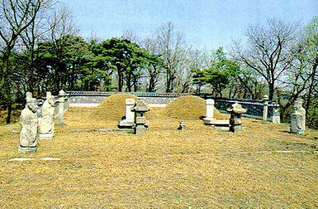 夫人 慎氏（籍居昌） 同葬海等村 子女 长子 废世子 李■ 废，流放旌善，后赐死 次子 庶人 李仁 燕山君时封昌宁大君，废，死 女 庶长子 庶人 李诚 燕山君时封阳平君，废，死 庶二子 庶人 李敦寿 庶女 中宗 恭僖徽文昭武钦仁诚孝大王 李怿 李怿（1488――1544）字乐天 弘治元年（成宗十九年，1488）三月十九日出生于景福宫。初封晋城君，生母尹氏被立为王后之后改为晋城大君。正德元年九月，朝鲜发生宫廷政变，长兄燕山君被废，迎立晋城大君即位，是为中宗。 即位后受赵光祖、金��等儒家学者辅佐，推行所谓“至治主义”的治国方针。在位期间面临的最大问题是“南倭北虏”。1510年，盘踞在荠浦、富山浦、熊川三地的“恒居倭人”在对马岛主的带领下发动暴乱，史称“三浦倭乱”。之后又发生了楸子岛倭变、东莱盐场和蛇梁镇倭乱。北方的野人女真在1512年进攻了朝鲜的甲山和昌城。 在位期间继续推行灭佛政策。同时因为朝鲜使臣在中国私下贸易，贪婪尤甚，以至被明朝锦衣卫把门看守拘于礼部会同馆内，朝鲜感到“祖宗见宠于中华之美扫地矣”，因此颁布了除书籍和药材外禁用唐物（中国进口商品，尤其是高级丝织物和奢侈品）的命令。同时，中宗对明朝政局也多加刺探，多次密令朝鲜赴华使节了解明朝皇帝、朝廷动态。朝鲜虽然事明恭谨，但是素以“礼义之邦”自居，常从儒家宗法道德角度出发私下批评明朝弊政。中宗对明朝皇帝便颇不以为然：“成祖……以一言之失，诛戮大臣，略不假借，甚为不可”、 “崇信释教，非帝王盛德”；宣宗“兴居无节，岂美事乎？”；世宗“好自用，天下之事无不总治，如有直言者，辄重刑，人皆禁嘿”……。但是中宗自己在汉城也并非“兴居有节”，尤其喜好炼金术和命课学。 中宗年间，发生了己卯士祸（1519，赵光祖死）、辛巳诬狱（安塘之乱，1522，士林派再次被贬）、全国传染病（1526年）、灼鼠之变（1528年，敬嫔朴氏被废，1533年赐死）等政局变动。 嘉靖二十三年（1544年）十一月十四日，在位三十八年的中宗大王去世于昌德宫欢庆殿。终年五十八岁。明朝赐谥“恭僖”（敬事供上曰恭；小心畏忌曰僖）。初葬高阳，明宗十七年迁葬广州靖陵。 王妃 恭昭顺烈端敬王后 慎氏（籍居昌） 成化二十三年（1487年生）。父亲慎居勤。姐姐慎氏为燕山君夫人，因此在1506年的中宗反正事件中受到牵连，中宗即位后仅仅八天便被废，迁至私第居住。中宗十年，章敬王后得产后病死去后，勋旧派和士林派曾经为端敬王后复位问题展开过争论。明宗十二年（1557年）去世，终年七十一岁。肃宗二十四年追上王后尊号。葬温陵。 宣昭懿淑章敬王后 尹氏（籍坡平） 弘治四年（成宗二十二年，1491）生。中宗即位后由淑仪册封为王后。中宗十年（1515年）去世，终年二十五岁。葬禧陵。 圣烈仁明文定王后 尹氏（籍坡平） 弘治十四年（燕山君七年，1501）生。中宗十二年（1517年）册封王妃。明宗即位后曾垂帘听政。明宗二十年（1565年）去世，终年六十五岁。葬靖陵。 子女 长子 仁宗大王 次子 明宗大王 （初封庆原大君） 长女 孝惠公主 （章敬王后所生） 次女 懿惠公主 （文定王后所生） 三女 孝顺公主 （文定王后所生） 四女 敬显公主 （文定王后所生） 五女 仁顺公主 （文定王后所生） 庶子 长子 福城君 李嵋 （敬嫔朴氏出） 次子 海安君 李■ （淑仪洪氏出） 三子 锦原君 李岭 （熙嫔洪氏出） 四子 永阳君 李�� （昌嫔安氏出） 五子 德阳君 李岐 （淑媛李氏出） 六子 凤城君 李�� （熙嫔洪氏出） 七子 德兴大院君 李�G （昌嫔安氏出） ===================================== 嘉靖九年三月五日生，九岁封德兴君。嘉靖三十八年五月九日去世。隆庆元年宣祖即位，追封为大院君。葬杨州 夫人 河东府大夫人 郑氏 郑麟趾孙女，隆庆元年去世。合葬杨州 子女 河源君 李�{ 河陵君 李�l 出继锦原君李岭之后 河城君 李�V（宣祖）承明宗嗣 ===================================== 长女 惠顺翁主 （敬嫔朴氏出） 次女 惠静翁主 （敬嫔朴氏出） 三女 贞顺翁主 （淑媛李氏出） 四女 孝静翁主 （淑媛李氏出） 五女 淑静翁主 （淑媛金氏出） 六女 静慎翁主 （昌嫔安氏出） 仁宗 荣靖献文懿武章肃钦孝大王 李�G 李�G（1515――1545）字天胤 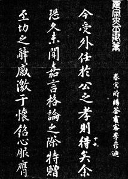 正德十年（中宗十年，1515）二月二十五日生于景福宫。正德十五年册封王世子。嘉靖二十三年（1544）十一月二十日即位于昌庆宫明政殿。次年七月去世于景福宫之清燕楼下小寝。在位一年，终年三十一。明朝赐谥“荣靖”（宠禄光大曰荣；宽乐令终曰靖）。葬高阳孝陵 王妃 孝顺恭懿仁圣王后 朴氏（籍罗州） 正德九年（中宗九年）生，嘉靖三年册封世子嫔，嘉靖二十三年进封王妃。万历五年去世于景福宫，终年六十四。葬孝陵 子女 无子，无嗣 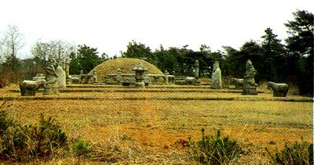 明宗 恭宪献毅昭文光肃敬孝大王 李�` 李�`（1534――1567）字对阳 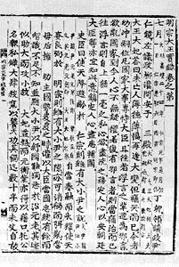 嘉靖十三年（中宗二十九年）五月二十二日生。初封庆原大君，嘉靖二十四年（1545）七月六日以仁宗遗命即位于景福宫勤政门。 明宗即位时方十二岁，由文定王后垂帘听政。中宗二十二年，勋旧派元老南衮死后，勋旧派势力便一蹶不振。到明宗即位时，朝中已经是士林派的天下。其时士林派分为两派，以尹任为首的大尹派和以尹元衡为首的小尹派，两派之间斗争激烈，不亚于当年士林和勋旧之争。明宗三年（1547），发生了在良才驿墙壁上书写大逆不道文字的壁书事件（丁未士祸），尹任和凤城君李�袷芮Ａ�被赐死。明宗六年，王子（顺怀世子）出生，为此大赦全国，在燕山君和中宗朝受打击的佛教势力借此机会得到复兴。明宗十一年发生了乙卯倭变，十六年，朝鲜著名学者李退�l设立了陶山书院。十九年，顺怀世子死亡。二十三年，小尹派首领尹元衡自杀。 隆庆元年六月二十八日，明宗去世于景福宫养心堂。在位二十二年，终年三十四。明朝赐谥“恭宪”（敬顺事上曰恭；行善可纪曰宪）。葬杨州康陵。 王妃 宣烈懿圣仁顺王后 沈氏（籍青松） 嘉靖十一年（中宗二十七年）生,嘉靖二十四年册封王妃。万历三年（宣祖八年）于昌庆宫之通明殿去世，终年四十四。葬康陵。 子女 嗣子 宣祖大王 长子 顺怀世子 李�� 宣祖 昭敬正伦立极盛德洪烈至诚大义格天熙运景命神历弘功隆业显文毅武圣睿达孝 大王 李�V 李�V（1552――1608）初名李钧 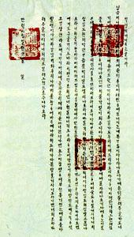 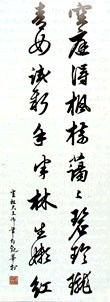 德兴大院君第三子。生母河东府大夫人郑氏。嘉靖三十一年 （明宗七年，1552） 十一月十一日生于汉城仁达坊私第（德兴大院君第）。初封河城君。隆庆元年七月三日以明宗遗命即位于景福宫勤政殿，入承明宗之嗣。 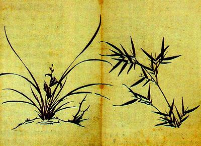 十五岁的宣祖即位之后，面临的最大问题是朝中党争。1585年，士林派中一批年纪较轻的学者和一批年纪较大的学者间发生派别分裂，依照他们在汉城不同的居住区域，又分别称为“东人”（岭南学派）和“西人”（畿湖学派）。两派之间互相攻击，乃至利用权势而对对方加以打击和迫害。在先前的党争中丧生的赵光祖、尹任等人被平反，尹元衡等人则被削勋。 当时朝鲜面临的外部威胁有东北和南部两处。东北女真不时骚扰边境，掠夺人口。但是最大的威胁来自南方。在暂时让日本各交战的封建领主休战的织田信长被暗杀后，丰臣秀吉于1590年上台当权。丰臣秀吉面临的问题是如何削弱日本西部那些势力强大的封建领主。在这种国内形势一触即发的情况下，他把视线转向国外，断定进攻中国会带来在国内求得和平解决所需要的出路。丰臣秀吉请求朝鲜协助攻打中国，遭到拒绝，于是丰臣秀吉命令他的部将进犯朝鲜。1592年4月，丰臣秀吉以小西行长为先锋，辅以加藤清正、岛津义弘等率领陆军约16万，又派九鬼嘉隆、藤堂高虎等领战船七百艘约四万水师，于朝鲜南部的釜山登陆。朝鲜历史上有名的“壬辰倭乱”开始。 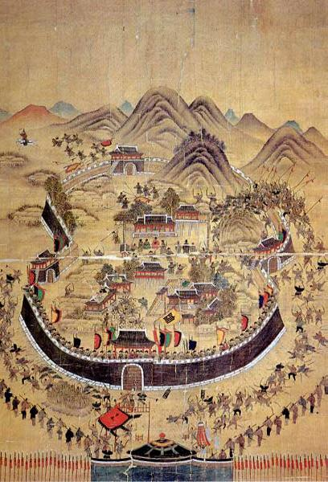 东莱府殉节图，彩色绢本绘画，1760年作 1592年5月2日深夜，汉城留都大将金命元向北逃窜，加藤清正率领日本军队度过汉江攻占汉城。日军入城之后，汉城遭到很大的破坏。城中宫殿、宗庙、社稷、衙署、城门全部被焚毁。宣祖在王子、大臣的扈从下逃到北方平安道的义州，随时准备逃入中国境内，同时派出络绎不绝的使臣前往北京，呼吁明朝皇帝协助抗击进犯日军。日军所到之处，烧杀掳掠，玉石俱焚，，晋州一地“军民被屠者六万”，大大激起了朝鲜人民的反抗。他们一呼百诺，组织义兵，以游击战争打击敌人。宜宁地区的儒生郭再佑首先举义，献出家产，组织武装，袭击敌人。每次战斗他都身披红装，一马当先，敌人称其为“红衣将军”。他很快收复了宜宁、三嘉、陕川等地区。其他地方的高敬命、金千镐、李基鲁、洪彦秀父子、僧人灵圭等都使敌人闻风丧胆。他们“虽无统一领导，但作战英勇，成为抗敌的重要力量，当时朝鲜政府的一位官员曾叹道：‘灭倭救国，实义兵之力也’”。 朝鲜的爱国官兵也积极行动。金时敏率军三千余众坚守晋州，激战五昼夜，城池巍然不动。连妇女都扮男装助战，城内的石块瓦片俱有殆尽，战斗之激烈由此而知。给敌人以致命打击的应首推全罗道左水使李舜臣，他改制黾船，使船长十一丈三尺，宽一丈四尺半。船体覆以铁板，上面遍插锥刀，船首龙头高昂，内设铳口可射前方远敌；两舷页遍射枪穴可毙左右近敌，两侧设浆数十，进退自如。士兵隐蔽舱内操作不易被敌杀伤。外形似黾，故而得名。其性能良好，威力极大。“英国海军史称它为世界铁甲舰之祖”。李舜臣率领着这样的“铁甲舰队”，通过玉浦、合浦、赤珍浦的第一次战役，唐浦、栗浦的第二次战役，和著名的闲山岛战役，共击沉敌舰三百多艘，歼灭了日本水师主力。打破了敌人的“水陆并进”计划，迫使敌陆军在占领平壤后却步不前。 战事初开，李朝当即遣使入明求援。明政府深知日军朝之目的“实所以图中国”，“而我兵之救朝鲜，实所以保中国”。因此，1592年7月先派兵五千入朝。年底，神宗朱翊均复命宋应昌为经略总理入朝军务。李如松为“东征提督”，负责前敌指挥，猛攻平壤，经三日激战，使敌酋小西行长弃城南逃。联军乘胜追击又连下开城。首战告捷，朝野雷动，义兵又四处配合，形势急转直下，日寇士气低下，不得不从汉城撤退。战争第一阶段结束。 日军挫败之后，为争取喘息机会卷土重来，通过明朝主和派的沈惟敬提出议和。但无理要求朝鲜南部的四个道割给日本，朝鲜国王对日本宣誓效忠，王子、大臣各一人赴日本留作人质，明朝公主嫁给丰臣秀吉等条件。由于日方并无诚意，谈判从1593年4月开始，拖延三年多而告破裂。 1597年2月，丰臣秀吉借口和谈破裂，以陆军十四万、战船数百艘，重新启衅（史称“丁酉再乱”）。由于朝鲜党争激烈，加上中敌离间，李舜臣被诬通敌而撤职，继任者元均无能，造成第一回合的海战竟使主力水师几乎全军覆没。李朝再次向明求援。1597年，明派邢�d、杨镐、廉贵等为将率四万军入朝，于稷山大败日军。翌年，明又以万世德为经略，并派陈�U、邓子龙的水军辅助。朝鲜又重新启用李舜臣以十二艘战船百余名士兵之寡，挫败了三百三十艘敌船的轮番进攻，创造了歼敌四千、击沉敌船百余艘的奇迹。丰臣秀吉骑虎难下，在懊丧忧急中于1598年秋郁郁而死。临终他哀叹败局已定，并嘱撤军。日军无心再战，全线溃逃。1598年11月北朝重水实在露梁海面截击。李舜臣亲驾旗船冲入敌阵，陈�U一船奋力协助。邓子龙虽年及七旬但不减当年雄姿。后来它的战船中弹起火，仍镇静自若。李舜臣飞船来救，左胸中弹，但仍战斗不已。两位将军并肩战斗壮烈牺牲。海战从11月18日夜开始，持续到19日中午，整个露梁海面，火光烛天，炮声阵阵。中朝联军，浴血苦战，取得了击沉敌船四百五十艘、歼敌一万五千的彻底胜利。敌酋岛津义弘挟所剩五十多条破船狼狈逃窜。历时七年的壬辰卫国战争胜利结束。 （有关此役的详细情况，可参见世界古代史论坛的帖子《万历朝鲜之战》） 丰臣秀吉进行侵略造成的后果包括李朝的大量政府纪录、文物、档案、建筑物、历史文献和艺术品被毁，田地荒芜，人口减少，工匠和技术人员流失。耕地仅为战前面积的三分之一。由此造成的国家岁入的减少又使得有必要对遭受破坏较轻的道如京畿道和忠清道加征税收。政府不得已采取出售官衔和两班身分的办法，有一次举行了农奴阶级也可参加的科举考试。工匠流失造成手工制品以及陶器和书籍印刷等的质量下降。新儒学的准则和价值观念发生动摇，两班试图维护的阶级差别也开始崩溃。日本则在丰臣秀吉的接替者德川家康的治理下，实现了一个和平的、中央集权的封建社会。输入新儒教的政治哲学和研究由韩国发展的医学材料和治疗方法帮助日本学者对他们的社会作出了重大贡献。金属活字印刷术的传入促进了书藉的刊印。被日本军队掳去的韩国工匠发展了陶瓷和纺织产品。在德川接手当政后，日本希望与朝鲜建立和平的邦交，以便进一步从朝鲜型的中国文化中受益。对明代中国来说，后果是灾难深重的。在战争中所受到的经济上的挫折后来导致明朝的覆灭。 十七世纪的战后时期，朝鲜的福利计划社会和经济情况都发生了转变。富商的兴起促进了两班社会的衰落，而财政困难又促使政府一再进行赋税改革和出售头衔。战前时期几乎没有过的社会地位上升的情况开始发生。富有的农民和商人获得了两班身份，奴婢也能赎身自由。批判精神日益盛行，对新儒新正统性提出异议。这种精神使人对两班失去信任。西方文化通过中国传入所发生的影响进一步促进了主张进行社会经济改革和调整的实学。派系斗争更加激烈。由于更多的两班――退出争权斗争者――改为从事土地耕种，人们的注意力被引到农业问题上来。结果，农管理技术和生产方法不断改善。私营的手工业场取代了官营的工场，刺激了为出售而生产货物。商业活动的增加促进了商业性农业的兴起，而商业性农业的兴起又促使农村生活开始性发生变化。钱币流通的扩大为农村生活和城市经济之间架起了一座梁。通俗诗歌和小说的兴起，促使人民注意社会的种种弊端，鼓励人民参加社会改革。 战后调整战后时期的迫切任务是改组国防部队和增加国家收入。备边司被提升到事实上的决策机构的地位。从战争直到选立储君等等国家大事，都由一个由议政大臣、六曹大臣和军事参谋部将军们组成的国防委员会决定。在战后的国防工作中，在中国南部沿海抗击日本海盗的战斗中证明有效的作战策略被放在首要的地位。可是，这种军队训练制度需要额外的预算，必须作为税款向农民征收。先前免服兵役的私人拥有的农奴被征入伍进行训练，因此其认为地位与平民工相等有了一个新的理由。重建宫廷殿堂和印刷诸如《朝鲜王朝实录》、土地簿籍和人口调查案卷的复本，全都需要额外的款项。由于军备生产造成金属短缺，刻制了木版。一反战前的做法，出售书籍来支付费用。大力恢复农业经济，因为这是国家岁入的主要来源。给人民医治疾病是一种迫切的需要，这促使医学专著的编纂诸如《东医宝鉴》这样的医学论著。该书于1610年完成。任人唯贤的制度早已受到破坏，因为遴选大武官员的考试已变成有权势的官员和当权派手中的工具。非定期的特别考试的及第者们造成了对土地的迫切需求，同时，拥有不登记土地的做法使国家岁入大量流失。由于一些两班谋求控制免税的学校土地，仅仅在17世纪私立学校的数目就增加了三倍，使学校房地产成倍增加，它们所荫庇的文人学士和学生数目也不断增加。王亲国戚和掌权的官吏积累了战时遗弃的土地，把它转为免税的财产。竞争官职变得激烈起来，因为担任一任官职很容易在经济上捞到好处。战后的财政困难又加剧了官场倾轧。得势的东人内部之间在诸如王储的选立和王家丧葬仪式这样的问题上时常发生意见分歧。东人派又分裂为李�辏�李退溪）为首领的南人派和曹植为首领的北人派。北人派由于拥立光海君即位而在后来的一段时间内得势。 万历三十六年（1608），饱受战乱党争之苦的宣祖大王去世于皇华坊离宫庆云宫（今汉城德寿宫）。在位四十一年，终年五十七岁。明朝赐谥昭敬 （谥法不传）。定世室。葬杨州穆陵 王妃 章圣徽烈贞宪敬穆懿仁王后 朴氏 （籍罗州） 嘉靖三十四年 （明宗十年，1557） 四月十五日生。隆庆三年己巳册封王妃。万历二十八年 （宣祖三十三年，1600） 六月二十七日去世于皇华坊离宫 （庆运宫）。终年四十六。葬杨州穆陵 继妃 昭圣贞懿明烈正肃光淑庄定仁穆王后 金氏 （籍延安） 万历十二年 （宣祖十七年，1584） 十一月十四日生。1602年册封王妃。崇祯五年 （仁祖十年1632） 六月二十八日去世于仁庆宫钦明殿。终年四十九。葬杨州穆陵 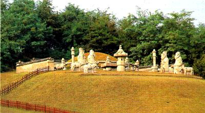 子女 长子 永昌大君 李■（仁穆王后生） 光海君即位后废为庶人，流放江华，光海君七年（1614）被害 长女 贞明公主 （仁穆王后生） 庶子 长子 临海君 李�� （恭嫔金氏出） 曾被倭寇俘虏，后放还，光海君二年（1609）被害 二子 光海君 李珲 （恭嫔金氏出） 三子 义安君 李�A （储庆宫敬惠裕德仁嫔金氏出） 四子 信城君 李�� （储庆宫敬惠裕德仁嫔金氏出） 五子 元宗大王 李�M （储庆宫敬惠裕德仁嫔金氏生） 六子 顺和君 李■ （顺嫔金氏出） 七子 仁城君 李珙 （静嫔闵氏出） 八子 义昌君 李�� （储庆宫敬惠裕德仁嫔金氏出） 九子 庆昌君 李�� （贞嫔洪氏出） 十子 兴安君 李�v （温嫔韩氏出） 十一子 庆平君李�� （温嫔韩氏出） 十二子 仁兴君李瑛 （静嫔闵氏出） 十三子 宁城君李�� （温嫔韩氏出） 长女 贞�跷讨� （储庆宫敬惠裕德仁嫔金氏出） 二女 贞惠翁主 （储庆宫敬惠裕德仁嫔金氏出） 三女 贞淑翁主 （储庆宫敬惠裕德仁嫔金氏出） 四女 贞仁翁主 （静嫔闵氏出） 五女 贞安翁主 （储庆宫敬惠裕德仁嫔金氏出） 六女 贞徽翁主 （储庆宫敬惠裕德仁嫔金氏出） 七女 贞善翁主 （静嫔闵氏出） 八女 贞正翁主 （贞嫔洪氏出） 九女 贞谨翁主 （静嫔闵氏出） 十女 贞和翁主 （温嫔韩氏出） 元宗 恭良敬德仁宪靖穆章孝大王 李�M（追谥，未即位） （1580――1619） 万历八年（宣祖十三年，1580）六月二十二日生于景福宫之别殿。万历十五年封定远君。在壬辰倭乱中扈从宣祖出逃北方，因此在万历三十二年录为“扈圣功臣”。万历四十七年（光海十一年，1619）十二月二十九日去世于汉城好贤坊寓舍，终年四十。仁祖即位后追尊为大院君，崇祯五年追尊为王。明朝赐谥“恭良”（敬事奉上曰恭；小心敬事曰良）。初葬杨州群场里，仁祖五年移葬于金浦章陵 王妃 敬懿贞靖仁献王后 具氏 （籍绫城） 万历六年 （宣祖十一年，1578）四月十七日生，庚寅行嘉礼。初封连珠郡夫人，仁祖即位后进封府夫人，宫号启运。天启六年 （仁祖四年，1626） 正月十四日去世于庆熙宫会祥殿，终年四十九。崇祯五年追尊为王后。葬章陵 长子 仁祖大王 李�� 初封绫阳君 次子 绫原大君 李�Y 初封绫原君，宣祖即位改封大君 三子 绫昌大君 李�� 初封绫昌君，宣祖即位改封大君 庶子 绫丰君 李丰 （金氏出） 光海君 李珲 （1575――1641） 万历三年乙亥（宣祖八年，1575）四月生。生母为恭嫔金氏。初封光海君。李珲自幼便足智多谋，其长兄临海君李��（李珲同母兄）虽为世子，但是不为宣祖所爱，身为庶次子，李珲自幼便被视为王位继承的合理人选，似乎表现出了更多的本领和野心。 万历二十年（1592），壬辰倭乱爆发，临海君李��被俘，宣祖仓皇出奔平壤，命令十七岁的李珲摄国事。李珲收集流散的军队和义兵，号召通国勤王，以图恢复。李珲的这个举措振奋了朝鲜民心军心，对全国团结一致打击倭寇很有作用。万历二十一年，日本撤出汉城，退守釜山，并将虏获的临海君和顺和君两位王子送还，倭乱暂时告一段落。此时，宣祖已经属意于光海君了。万历二十三年，宣祖册封光海君为世子，并上表明朝请求批准。明朝答复：“继统大义，长幼定分，不宜僭差”，遂不许。光海君由是对明朝暗有怨言。万历二十四年、三十三年，朝鲜再次上表请求易储，其时明朝也正为立储的事情闹得鸡飞狗跳，遂均不许――看来光海君是受了郑贵妃和福王的连累，呵呵。宣祖末年，朝鲜国内在立储问题上也发生了激烈的争吵，因为当时宣祖仁穆王后已经生有一子（永昌大君，1606年生），弃嫡立庶，与儒家宗法观念不合。朝廷中的北人党因此分裂为以李尔瞻为首、主张拥立光海君的大北派和柳永庆为首、主张拥立嫡子的小北派。小北派在光海君即位后受到打击，柳永庆被赐死，小北派分裂成清小北和浊小北，而大北派则又分裂成骨北、肉北和中北三派。 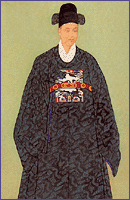 万历三十六年，宣祖大王病逝。事实上的世子光海君嗣位。并上表明朝，自称权署国事，请求册封。万历皇帝恶其专擅，不予理睬。但是当时东北亚的国际形势已经发生了变化，新兴的女真势力对明朝构成了威胁。为了确保东北边疆无虞，需要拉拢朝鲜，所以明朝在拖延了几个月之后，于是年十月乃册封李珲为朝鲜国王。李珲即位后，按照朝鲜官方史书的说法，是“昏乱日甚，幽废母后，屠兄杀弟”。从事实来看，后两条倒也确实。李珲即位后，宣布仁穆王后为废妃，囚禁在西宫（庆云宫）内，自己则搬到新修复的昌德宫（东阙）去住。而对其王位威胁最大的两个人――其同母兄、宣祖长子临海君，和年仅两岁的弟弟，宣祖嫡子永昌大君，则分别于1609年和1614年被害。 光海君在位期间，朝鲜诞生了象《东医宝鉴》这样的医学论著。该书于1610年完成。在这个时期，李朝选拔官吏任人唯贤的制度早已受到破坏，因为遴选文武官员的考试已变成有权势的官员和当权派手中的工具。经常举办的特选科及第者们造成了对土地的迫切需求，同时，两班地主们不登记拥有土地的做法使国家的岁入大量流失。由于一些两班利用免税的学校土地来逃避税收租赋，仅仅在17世纪私立学校的数目就增加了三倍，使学校房地产成倍增加，它们所荫庇的文人学士和学生数目也不断增加。王亲国戚和掌权的官吏积累了战时遗弃的土地，把它转为免税的财产。竞争官职变得激烈起来，因为担任一任官职很容易在经济上捞到好处。 在这种文武官员只顾私利不顾国家的风气下，朝鲜国势日颓。尤其雪上加霜的是，此时的朝鲜还面临后金的军事威胁。万历四十八年正月，李珲上奏：“敌兵八月中攻破北关，金台吉自焚，白羊出降。铁岭之役，蒙古宰赛亦为所灭。闻其国谋议以朝鲜、北关、宰赛皆助兵南朝，今北关、宰赛皆灭，不可使朝鲜独存。又闻设兵牛毛寨、万遮岭，欲略宽奠、镇江等处。宽奠、镇江与昌城、义州诸堡隔水相望，孤危非常。敌若从�パ艟成涎击焦厝÷啡瞥龇锘顺抢铮�一日长驱，宽镇、昌城俱莫自保。内而辽左八站，外而东江一城，彼此隔断，声援阻绝，可为寒心。望速调大兵，共为掎角，以固边防。”其时辽镇塘报称朝鲜与后金讲和，明朝朝议遂谓李珲阳衡阴顺，宜遣官宣谕，或命将监护，其说纷拿。李珲听到这种传言后自觉受到天大的冤枉，上疏辩解道：“二百年忠诚事大，死生一节”。明朝于是要求朝鲜派兵协助攻打后金。但是朝鲜军队一战既溃，光海君不得不试图与后金议和。 1616年，努尔哈赤（朝鲜史书称老酋、老乙可赤）基本统一女真各部，即位称汗，建立后金政权。1618年，他正式与明朝决裂，发兵袭破辽东重镇抚顺。面对努尔哈赤的挑战，明朝经过近一年的准备，于1619年春发动了大规模的围剿，出兵10万，号称47万，分4路夹击后金，志在必取。战前，明朝令朝鲜出兵助剿。朝鲜私下认为“老酋桀骜，虽以中朝兵力，未能必其一举而剿灭”，惧怕努尔哈赤报复，但又不敢拒绝明朝的要求，于是采取敷衍、拖延之策，建议明军“但当陈兵练武，以作虎豹在山之势，更观伊贼之作为，相机而动”。，并且只答应将军队开到义州等边境地区。但是，在明军主帅、20年前有恩德于朝鲜的辽东经略杨镐的严厉申斥下，朝鲜还是不得不派出了1.3万军队，由都元帅姜弘立统领，前往助战。3月，明军在萨尔浒被努尔哈赤击败。由于光海君“实无战功之意”，在战前密谕朝鲜军队“观势向背，使虏勿为移兵先击之”，所以只有左营将军金应河力战而死。努尔哈赤对朝鲜致书笼络，称“尔朝鲜以兵助明，吾知非尔意也，迫于其势有不得已。且明曾救尔倭难，故报其恩而来耳”，对朝鲜表现出宽容，意在争取朝鲜。 如前所说，在即位问题上，光海君于明朝心有不满，因此主张在尽量不得罪明朝的情况下开展灵活外交，“善殚事大之诚，勿为小弛，羁縻方张之贼，善为弥缝”。在光海君坚持下，朝鲜致书后金，称自己臣服明朝是“大义所在，固不得不然”，而与后金的“邻好之情，亦岂无之？”，希望双方“各守封疆，相修旧好”。朝鲜与后金的往来引起了明朝的警惕，大臣徐光启奏称：“鲜、奴之交已合”，建议派官员“监护其国”。光海君闻讯又惊又怕，连忙遣使至北京“辩诬”。朝鲜举国上下都感激于明朝的“再造之恩”，不能容忍对天朝不忠的事情出现。天启三年（1623）三月十二日，西人党的李贵、李适、金自点等人在仁穆王后和新崛起的南人党势力的协助下，召集军队在绫阳君（后来的仁祖）的别墅内会合，打入庆云宫，发动宫廷政变。大北派的李尔瞻、郑仁弘等被赐死，二十八岁的绫阳君李��即位。被废黜的光海君则被带到仁穆王后面前接受斥责，然后用石灰烧瞎双目，流放于江华岛的乔桐，在清朝再次入侵朝鲜（丙子胡乱）之后，于崇祯十年（1637）转移到南方的济州岛。崇祯十四年（1641）七月朔日卒，寿六十七。墓在杨州赤城洞 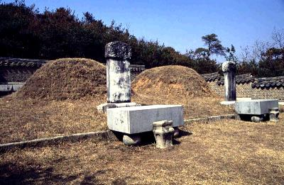 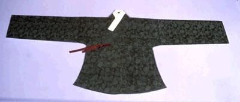 夫人 文化柳氏 墓在杨州赤城洞 子女 长子 李�� 初封世子，光海君被废后亦废，安置乔桐，数月后图谋挖地道潜出，赐死 庶女 ――牧野鹰扬（本家友人） |
||||